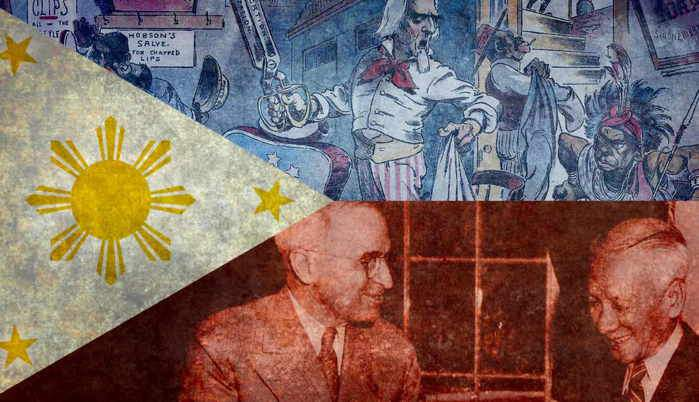
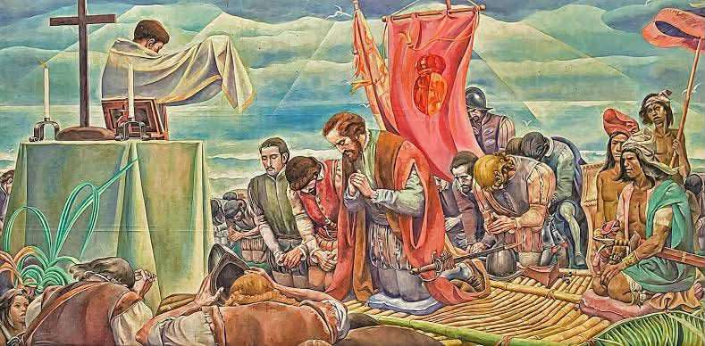
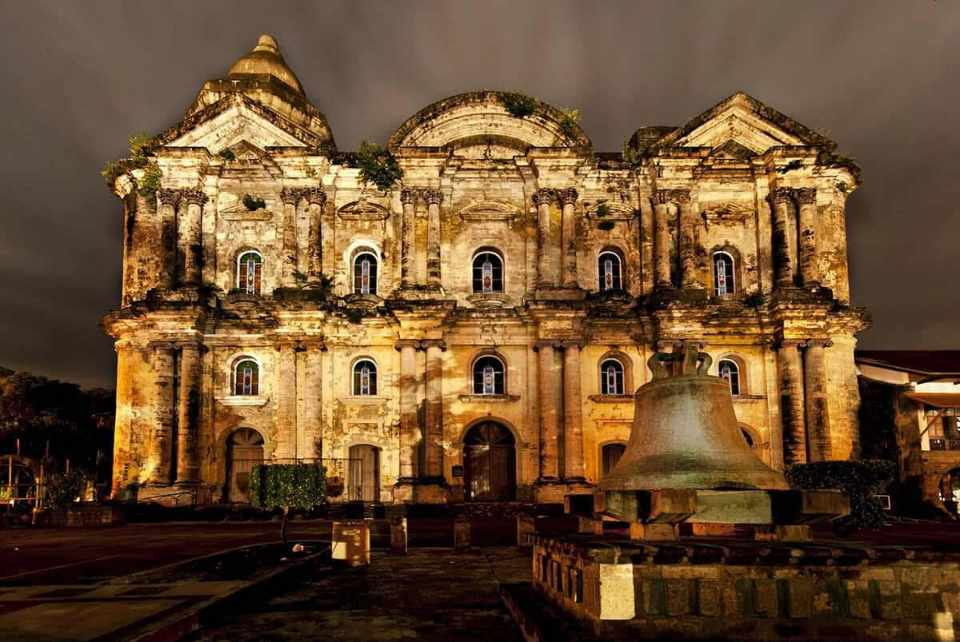
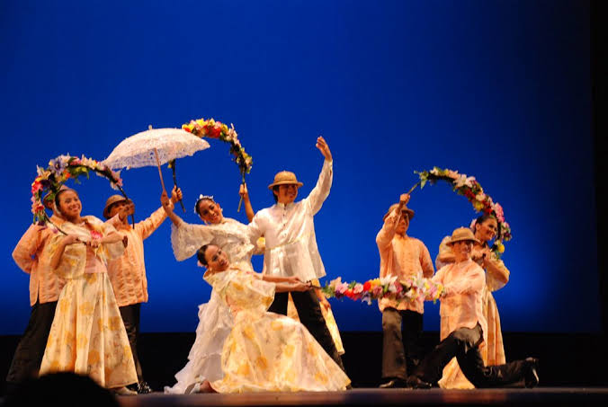
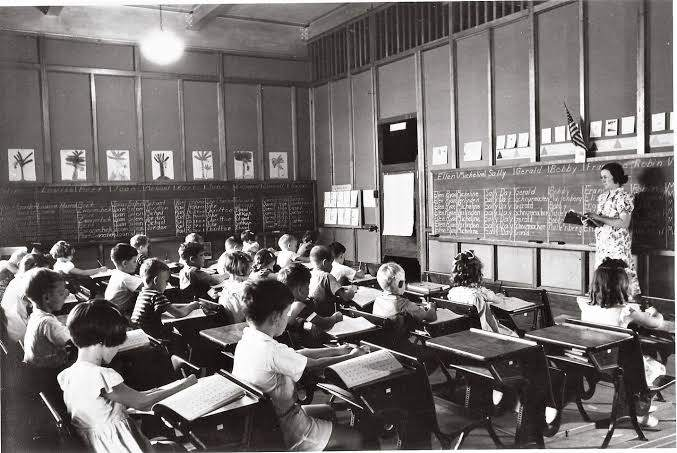
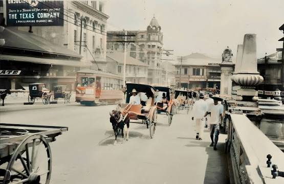
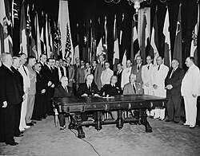

Historical Context
The history of the Philippines is shaped by indigenous
traditions and influences from different cultures. These
influences helped create the unique Filipino identity we know
today.
Colonizers greatly influenced the development of Filipino culture by introducing foreign religions, languages, traditions, food, and systems of government. Instead of completely replacing indigenous practices, these influences blended with existing Filipino customs and created a unique cultural fusion. Spanish colonization influenced Christianity, festivals, names, architecture, and language, while American colonization introduced English, public education, and new forms of entertainment. This cultural fusion can still be seen in Filipino food, music, celebrations, and daily expressions. However, colonization also caused the loss and suppression of some indigenous traditions. Therefore, Filipino culture reflects both the resilience of native communities and the lasting influence of foreign colonizers.

SPANISH INFLUENCE



AMERICAN INFLUENCE



.jpg)
.jpg)